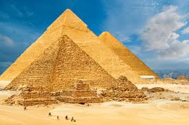

Cairo
Pyramid of Giza
The Pyramids of Giza, built as tombs for Pharaohs, are among the Seven Wonders of the Ancient World. The Great Pyramid, attributed to Khufu, stands as a testament to ancient engineering prowess. Surrounded by the Sphinx, these monumental structures continue to captivate visitors with their historical significance and grandeur.
Salah-el-din castle

The Citadel of Saladin, built in the 12th century, stands as a formidable fortress overlooking Cairo. This historic site features the stunning Mosque of Muhammad Ali, known for its impressive dome and minarets. The Citadel symbolizes Islamic architecture and military strength, offering panoramic views of the bustling city below.